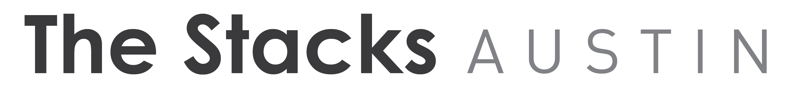

Building The Stacks
The Stacks is a project from the collaboration among the City of Austin's Office of Sustainability, Austin Public Library, the Center for Sustainable Development at the University of Texas School of Architecture, and the Public Interest Design Studio of Summer 2014. The Stacks are a product of the continuous support and sponsorship of The National Endowment for the Arts (NEA), and the Surdna Foundation.
The design concept for the installation was developed over a seven-week period. Within this time frame, students considered to not only the physical aspects of the analogue structure housing the touch screen. The collective image of the Hub and its characteristics emerged as community concerns and design goals surfaced. The team then developed a concept founded on three structural criteria: interacting and integration; safety; and sustainability and health.
The construction of The Stacks was completed in about two weeks. Its main components are:
1) Base & Top: these were CNC routed out of plywood with grooves, notches, and nooks cut out for casters, vertical slats, steel corner bumpers, extra weight, and the mobile TV cart.
2) Vertical Slats: there was also a lot of prep work to cut these down to the right height and put two layers of protective polyurethane coating on them. Also, many of the vertical slats had special notches to account for doors, lighting, and the 55" touchscreen.
3) Steel Corner Bumpers: these had to very specific shapes that fit in tightly to the base and were carefully cut to size, holes drilled, and welded prior to installation.
4) TV Cart: we had done a mock-up of this to test out how things would hinge/pivot, how the screen will mount, how tall things are (for ADA considerations). All the pieces that make up the cart were cut out, polyurethane-coated, holes for the hinging action drilled out, and finally assembled.
Check out the timelapse video that displays most the building process of The Stacks.
The Stack's surfaces are a place for users to reflect and express themselves. The surfaces are a 360° chalkboard with the map of Austin routed into it. Over 10 replaceable question inserts populate the structure's surface; users are asked questions about their spaces and they respond by writing on the structures themselves. More than 40 question prompts are included in The Stacks, each originating from a public engagement exercise. Rather than targeting a specific issue in the city, the Stacks prompt questions that can help people identify the issues they feel strongly about.
The Stacks will be installed in the new Central Library when it opens in 2016. Until then, they will spend about three months each at nine branch libraries and the Faulk Central Library.
La Constucción de The Stacks
The Stacks es un proyecto creado a través de la colaboración ente la Oficina de Sustentabilidad de la Ciudad de Austin, las Bibliotecas Publicas de Austin, y el Centro Para el Desarrollo Sustentable de la Facultad de Arquitectura en la Universidad de Texas en Austin. El proyecto se desarrollo bajo el marco del estudio de diseño: Diseño de Interés Publico (Public Interest Design) durante el verano de 2014. El proyecto fue posible gracias al apoyo y patrocinio de The National Endowment for the Arts (NEA), y Surdna Foundation.
El concepto de diseño fue desarrollado durante siete semanas. En este tiempo, los estudiantes consideraron mucho mas que el aspecto físico de la instalación. El equipo, a través de interacción con las comunidades en Austin, desarrollo una serie de objetivos de diseño. Los objetivos se basaron en tres importantes aspectos a ser considerados durante el diseño y construcción de la instalación: interacción e integración, seguridad y sustentabilidad y salud.
La construcción fue realizada en aproximadamente dos semanas. Los principales componentes de la estructura son:
1) Base y Tope: todos los elementos fueron precisamente fabricados utilizando una maquina CNC. El diseño de las bases de madera considero todos y cada uno de los elementos necesarios para el funcionamiento de la instalación: ruedas, elementos verticales, protección de impacto, contrapesos y el elemento portante de la TV.
2) Elementos verticales: un gran numero de listones fueron utilizados en la construcción de la instalación. Todos ellos con algún nivel de especificación para poder ser instalados en su lugar especifico.
3) Protección de impacto: los protectores metálicos en las esquinas de la instalación debieron ser específicamente fabricados para encajar a la perfección en la estructura.
4) Elemento portante de la TV: luego de construir modelos de estudio para este elemento, las lecciones de los modelos de estudio fueron aplicadas en el modelo construido para sostener la TV. El elemento portante permite utilizar la TV en orientación horizontal y vertical.
El video en la parte superior de esta pagina exhibe gran parte del proceso de construcción de The Stacks.
Las superficies de The Stacks son un espacio para reflexionar y expresarse. Las superficies que rodean la instalación proveen un pizarrón en forma de mapa de Austin. Mas de diez preguntas intercambiables son colocadas en lugares espec√≠ficos de las superficies. Los usuarios responden a estas preguntas utilizando el mapa y, por lo tanto, la estructura misma, como medio de expresión. Mas de cuarenta preguntas están incluidas en The Stacks, todas ellas producto de ejercicios de acercamiento comunitario por parte de los estudiantes. En vez de atacar un problema especifico de la ciudad, The Stacks busca crear conciencia acerca de problemas comunes en las comunidades de Austin.
En 2016, The Stacks será instalado en la nueva biblioteca de Austin. Hasta entonces, la instalación recorrerá nueve bibliotecas publicas de Austin. Cada visita durara unos tres meses.